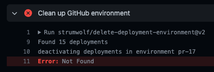
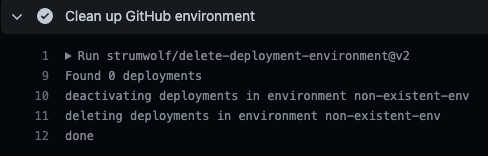

13/100 Days of Code
Paper Trader
Fly.io CI/CD debugging
Another full day trying to figure out deployment issues. Depsite the frustration, this should set the ground work for easier build and deployment when future features are implemented!
- The first issue I tried tackling was leftover from yesterday, the Github Action that deletes the temporary Github Environments from a PR.
- The action would find the environment, detect the number of deployments in it, and deactive them all before deleting the entire environment. That’s the expected behavior.
- However, when I ran the action, it would find the environment and detect the deployments, but would stop and spit out
**Error** Not Found - Oddly, when I pass in an environment value that doesn’t exist, such as
non-existent-env, it would run the action without issues  - Given the lack of progress of getting through this error, I decided to just comment out this portion of the Github Action to revist in the future
- Next, I wanted to finally close the PR for Discord OAuth implementation, which meant I had to set the
BACKEND_BASE_URLfor React to know where the server is located. However, there wasn’t anyway to set that on Firebase since it’s more of a build time variable. Thus, I changed theconfig.tsto explictly set theBACKEND_BASE_URL.
// previously
const BACKEND_BASE_URL = process.env.REACT_BASE_URL || "http://localhost:8080"
// currently
const BACKEND_BASE_URL = process.env.NODE_ENV === "production"
? "https://paper-trader.fly.dev/" // trailing "/"...
: "http://localhost:8080";
- Now that the Github Actions for CI/CD were finalized, I merged the previous PR for Discord OAuth to main and watched the magic happen as everything was automatically rebuilt and redeployed!
- Except when I tried the Discord OAuth flow on the deployed app, I got a
CORSerror and a502error.- In the console, I noticed there was an extra
/in the server URL, so made a quick change to that in theconfig.ts
- In the console, I noticed there was an extra
- However, after that change I still got errors after getting redirected from Discord
- So I went to dig through the logs on
flyand noticed myredirect_uriwas still sayinglocalhost…
- So I went to dig through the logs on
- Except when I tried the Discord OAuth flow on the deployed app, I got a
- I knew my Firebase React frontend is in production as the Discord OAuth authorization confirmation page showed the deployed URL. Which meant my deployed backend on
flydoesn’t haveNODE_ENV='production'.- After tons of searching and digging into the docs, I found an open issue for the Github Action I was using that was very similar to my problem.
- Based on the discussion, I added
NODE_ENV="production"as both anenvvariable and a[build.args]sections of thefly.tomlfile.
- With these changes, I can wrap up CI/CD for now such that adding new features and expanding the app will deploy automatically once changes are made to the main branch.
- Of course, tests need to be added to the CI/CD pipeline later on…
Next Steps
- Can finally go back to working out user sessions!